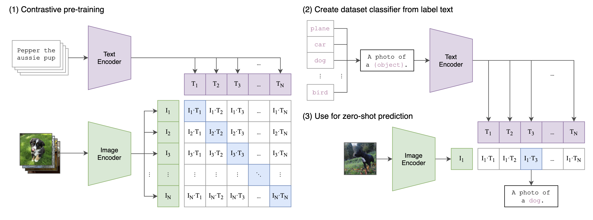
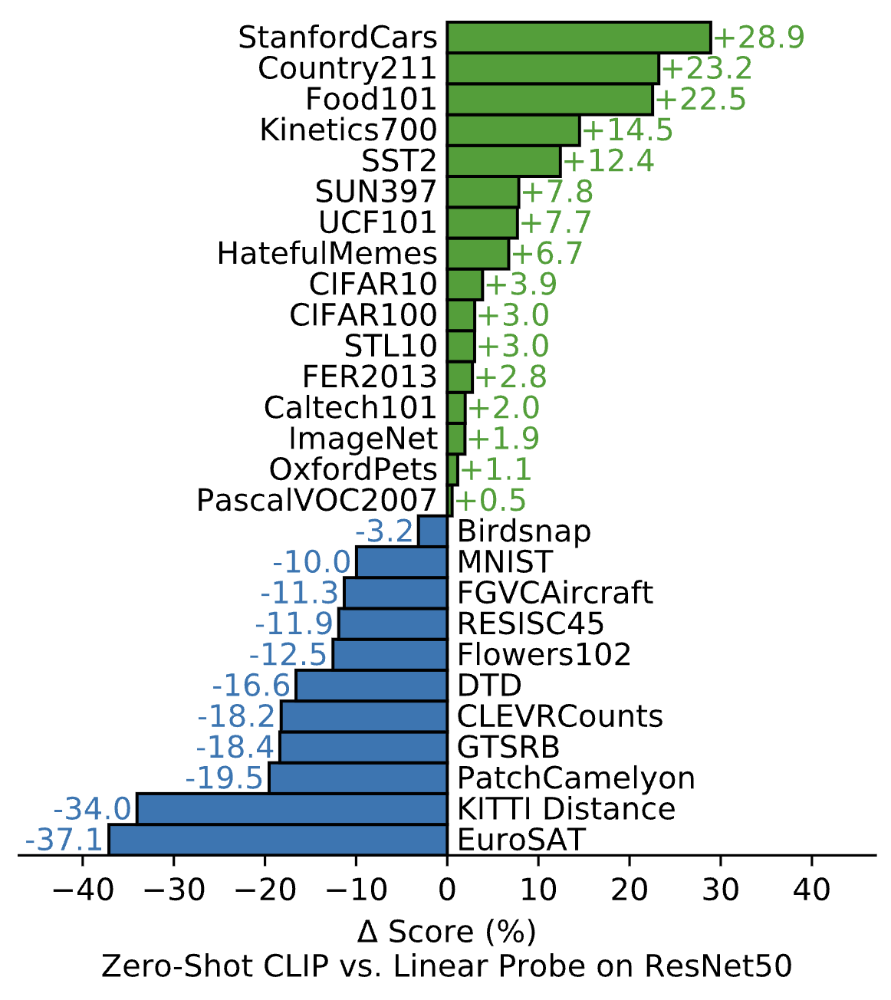
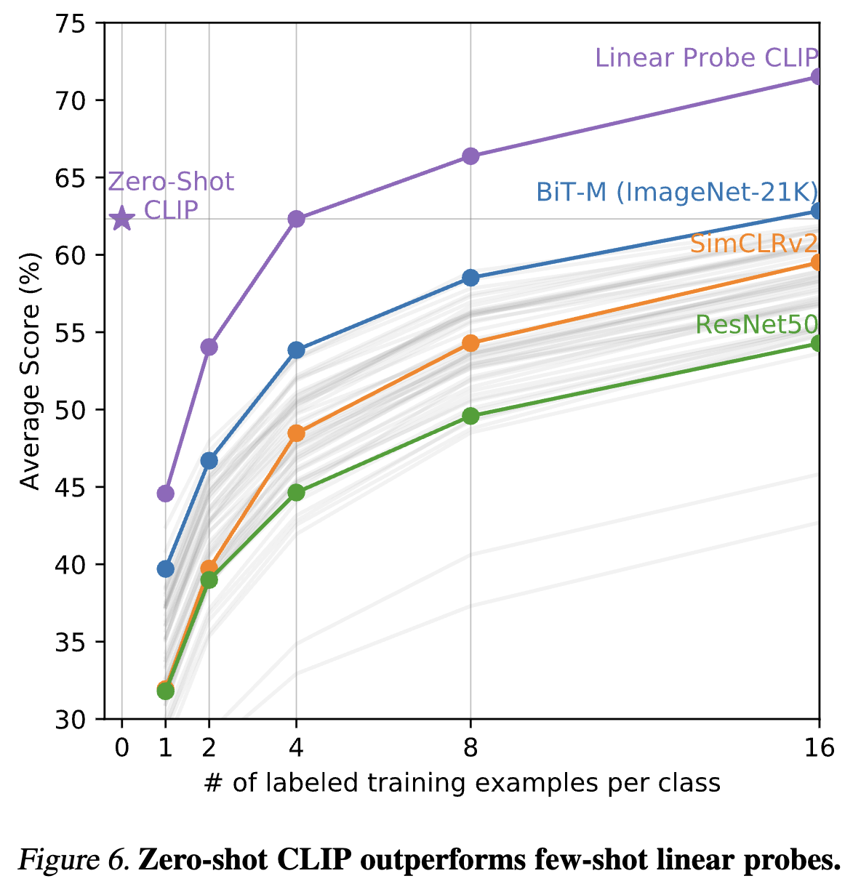
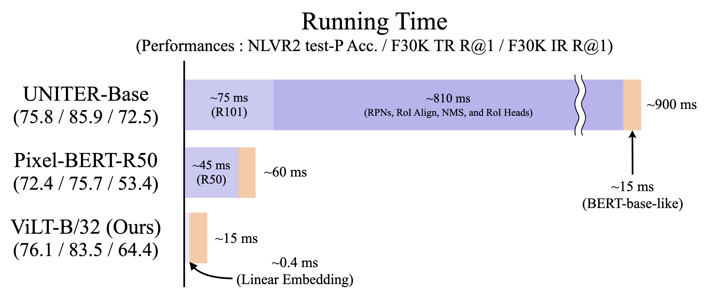
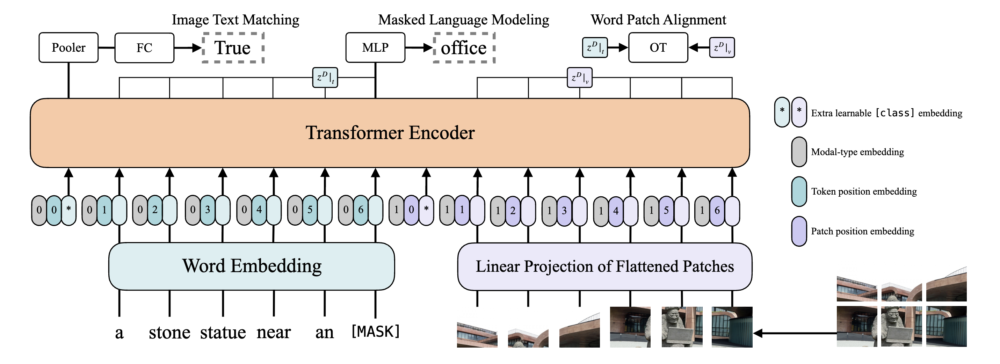

name: inverse layout: true class: center, middle, inverse --- # Text-supervised Learning Author: .yellow[Cuiem] [[Index](../../index.html)] .footnote[Supported by [Remark](https://github.com/gnab/remark)] --- layout: false class: center, middle # Agenda ### 1. Clip ### 2. ViLT ### 3. Inspiration --- template: inverse # Clip --- # Clip CLIP 模型通过对比学习的思想，通过对比学习的方法，将图像和文本嵌入到一个共同的向量空间中，从而实现图像和文本之间的语义对齐和强大的零样本跨模态理解能力。 <center> <p></p> </center> [Paper](https://arxiv.org/pdf/2103.00020) .footnote[.red[*] Radford, Alec, et al. "Learning transferable visual models from natural language supervision." International conference on machine learning. PmLR, 2021.] --- ## Clip on Zero-shot Learning 零样本学习的核心在于利用模型在其他相关任务或大规模无标签数据上学到的通用知识、语义理解或表示能力，来推广到全新的、未见过的任务上。模型需要具备推理和泛化的能力，将已有的知识迁移到新的情境中。 .pull-left[ <center> <p></p> </center> ] .pull-right[ <center> <p></p> </center> ] .footnote[.red[*] Radford, Alec, et al. "Learning transferable visual models from natural language supervision." International conference on machine learning. PmLR, 2021.] --- template: inverse # ViLT --- layout: false # ViLT ViLT (Vision-and-Language Transformer).red[*] 是一种开创性的视觉-语言模型，它创新地将图像分割成块并像文本一样处理，直接输入到标准的 Transformer 编码器中，从而 摒弃了复杂的卷积网络和区域提议。通过这种极简的设计和在多任务上的预训练，ViLT 有效地学习了图像和文本之间的跨模态关联，并在各种下游任务中展现出高效且具竞争力的性能。[Paper](https://arxiv.org/pdf/2102.03334) <center> <p></p> </center> .footnote[.red[*] Kim, Wonjae, et al. "Vilt: Vision-and-language transformer without convolution or region supervision." International conference on machine learning. PmLR, 2021.] --- # ViLT <center> <p></p> </center> 模型接收两种模态的序列化输入：图像首先被分割成固定大小的图像块，然后通过线性层和位置编码转换为视觉嵌入序列.red[*]；文本则被标记化并转换为文本嵌入序列，同样添加位置编码。这两个嵌入序列被拼接在一起，并输入到 Transformer 编码器中进行自注意力和交叉注意力交互，最终通过不同的输出层来完成各种视觉-语言任务。 .footnote[ .red[*] Dosovitskiy, Alexey, et al. "An image is worth 16x16 words: Transformers for image recognition at scale." arXiv preprint arXiv:2010.11929 (2020). .blue[*]Devlin, Jacob, et al. "Bert: Pre-training of deep bidirectional transformers for language understanding." Proceedings of the 2019 conference of the North American chapter of the association for computational linguistics: human language technologies, volume 1 (long and short papers). 2019. ] --- template: inverse # Inspiration --- template: inverse #Thank You! [[Index](../../index.html)]